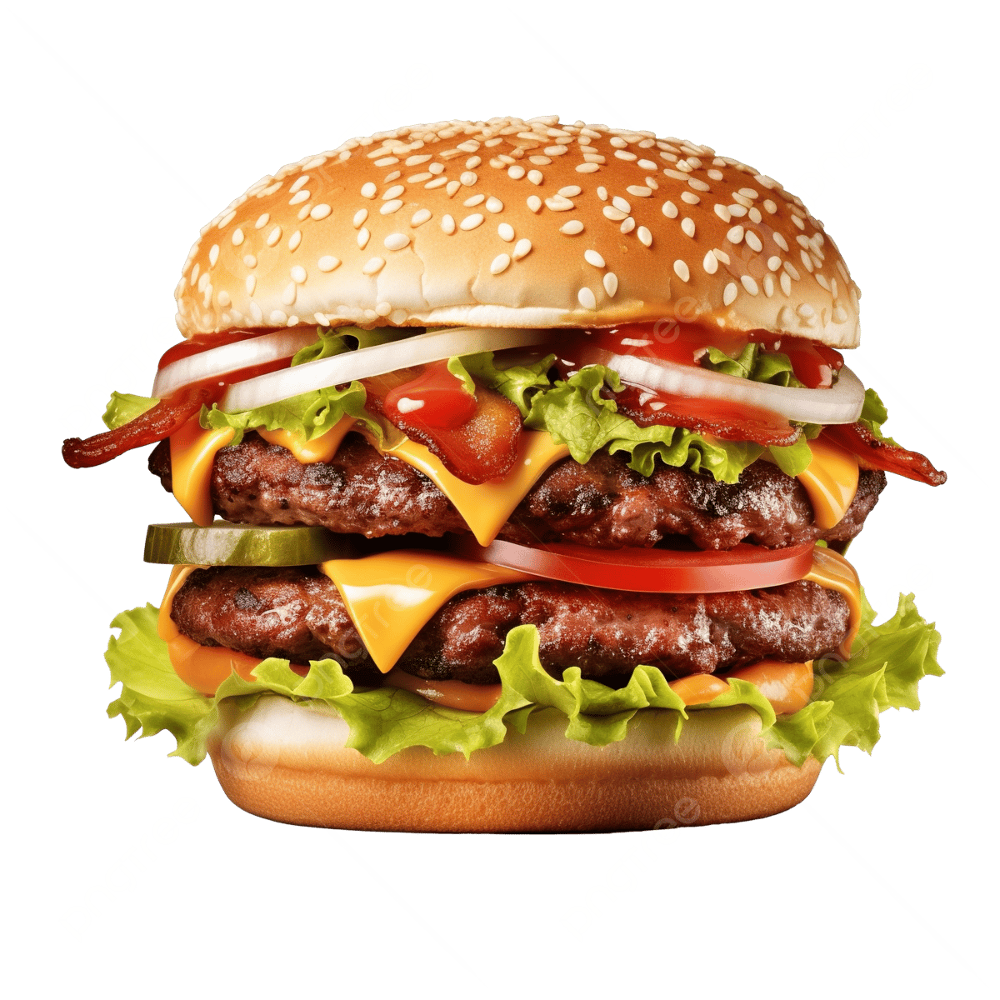

Burger Recipe

Juicy and Delicious Burger
A burger is a sandwich consisting of one or more cooked patties of ground meat,
usually beef, placed inside a sliced bun or bread roll. It is often served with various
toppings such as lettuce, tomato, cheese, pickles, onions, and condiments like ketchup
and mustard.
Ingredients
- 1 lb ground beef (80/20 blend)
- Salt and pepper to taste
- 4 hamburger buns
- 4 slices of cheese (optional)
- Lettuce leaves
- Sliced tomatoes
- Sliced onions
- Pickles
- Ketchup and mustard
Steps
- Preheat your grill or stovetop skillet over medium-high heat.
- In a bowl, season the ground beef with salt and pepper. Form into 4 equal patties.
- Cook the patties on the grill or skillet for about 3-4 minutes on each side for medium doneness.
- If using cheese, place a slice on each patty during the last minute of cooking to melt.
- Toast the hamburger buns on the grill or in a toaster.
- Assemble the burgers by placing a patty on each bun and adding your desired toppings.
- Serve immediately with fries or your favorite side dish.